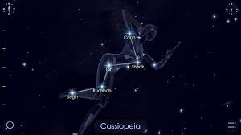
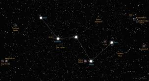
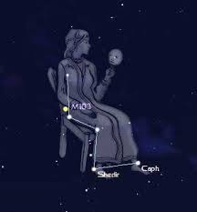

Cassiopeia is a prominent constellation in the northern sky, easily recognizable by its distinctive 'W' shape formed by five bright stars. In Greek mythology, Cassiopeia was the vain queen of Ethiopia, who boasted about her unrivaled beauty. As a punishment for her arrogance, she was placed in the sky as a constellation, where she is often depicted sitting on her throne. Cassiopeia is best visible during the autumn and winter months in the Northern Hemisphere. The constellation contains several notable deep-sky objects, including the open clusters M52 and M103, as well as the famous variable star Delta Cassiopeiae, also known as Ruchbah. Cassiopeia's position near the North Celestial Pole makes it a useful reference point for navigation and locating other celestial objects in the night sky.
  